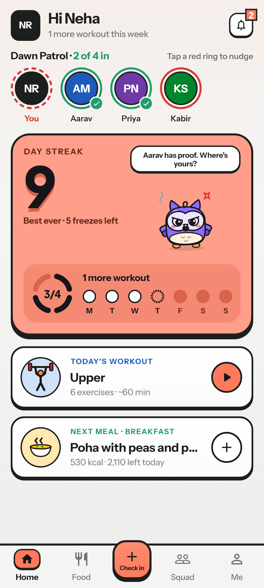
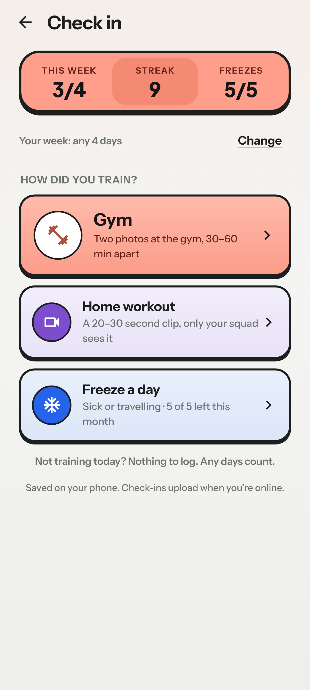
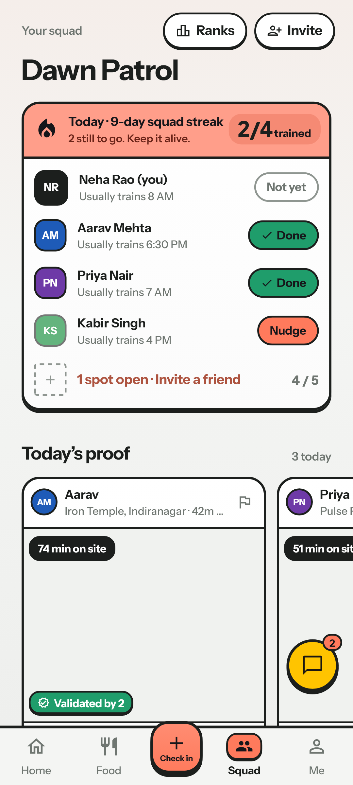
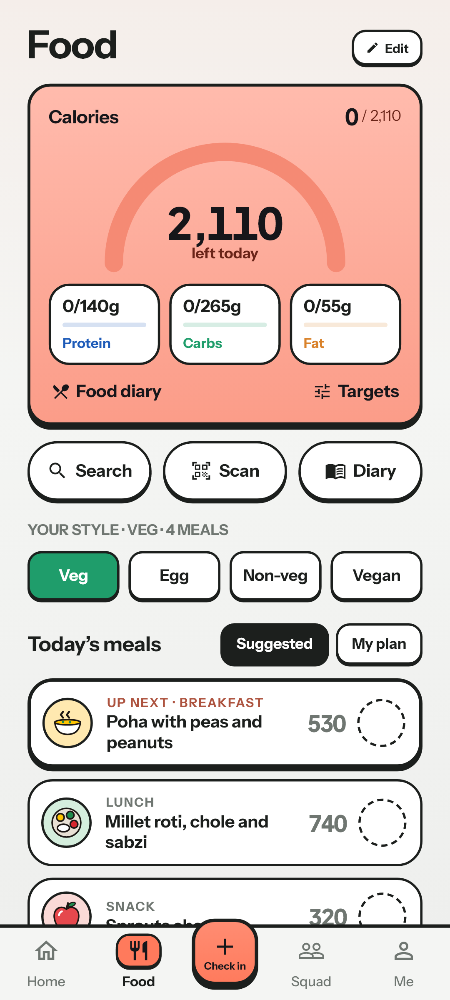
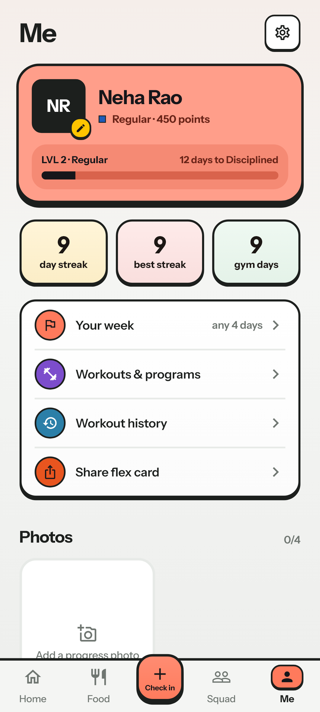
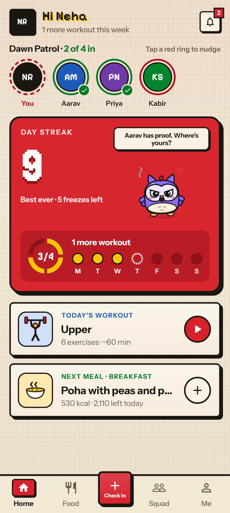

Alibi
Gym accountability with your friends. A small squad checks in with proof, keeps a shared streak, and notices when someone goes missing.
Try the live demo →The real app, running in your browser with a sample squad. It opens by asking you to pick a look: Playful (pixel, the main style) or Simple; you can switch later in Settings > Look. Sign in with any email and any 6 digits; nothing is saved.
Summary
People rarely quit the gym because they lack a tracker. They quit because nobody notices when they stop. Alibi turns a few friends into a squad: each workout is a check-in with proof (two photos at the gym, or a short home clip), the squad sees it, and missing days have a cost to a shared streak.
I designed, specified and tested the product end to end, built it with AI coding tools, and shipped a working Android app with a live backend, which friends are now testing. This brief covers the problem, who it's for, what I built, the decisions behind it, and how I'll measure it.
The product today
Real screens from the current build, rendered from the app's code with demo data. Scroll sideways, or open the live demo.






Problem
- Consistency, not knowledge, is the bottleneck. Most beginners know they should train 3–4 times a week; the habit breaks in the first weeks, quietly.
- Trackers record, they don't hold you to anything. A log you can ignore costs nothing to ignore.
- Social apps reward posting, not showing up. A public feed invites performance; a gym selfie proves little.
- Training with friends works, but friends are busy. Coordinating in a group chat fades within weeks.
Insight: accountability works when a few people you know are watching, and when cheating is harder than going.
Who it's for
The restarter (primary)
18–30, urban India, has joined and quit a gym before. Has two to four friends who also "keep meaning to go". Price-sensitive; uses WhatsApp and Instagram daily.
The squad leader
Already consistent and wants company. Creates the squad, invites friends, and nudges. Their success depends on the others staying.
Personas come from my own circle and early tester conversations; formal research is a next step.
Goals and non-goals
Goals
- Help people hit a weekly training goal they chose themselves.
- Make a check-in honest enough that a streak means something.
- Get a new user into a squad within their first week.
Non-goals (v1)
- No real-money stakes. Legal risk, and money turns friends into referees.
- No AI form analysis or wearables.
- No iOS app yet (a web demo covers iPhone testers).
- No public social network: squads cap at 13.
Solution: the core loop
- Proof: at the gym, two in-app photos 30–60 minutes apart, matched to the gym by GPS. At home, a 20–30 second clip only the squad sees. No gallery uploads.
- Weekly goal, any days: pick a number from 1 to 7. Which days doesn't matter, so life can move around it.
- Fairness: streak freezes for sickness and travel, approved by the squad when used in bulk; squad-mates can flag a doubtful check-in.
- Support around the habit: a training plan with logging, a calorie target that adapts every two weeks, and a food diary with barcode scanning.
Key decisions and trade-offs
| Decision | Why | What we gave up |
|---|---|---|
| Two photos, not continuous GPS tracking | Proves presence and duration without draining battery or tracking people all day. | A determined cheater can still game it; squad flags cover that. |
| The server decides streaks, not the phone | A modified app can't fake progress; every number squad-mates see is the server's. | More backend work, and the global leaderboard updates within a minute instead of instantly. |
| No money on the line | Avoids gambling and refund rules and keeps trust. A paid tier waits for demand: a "tell me when it's ready" button counts interest first. | A strong motivator some competitors use. |
| Check in from a raised button on every tab | It's the one action that matters. A card on Home duplicated it and was easy to scroll past. | One tab slot; Ranks moved inside Squad. |
| "Any days count" and a 1–7 weekly number | Fixed training days and a separate "rest day" button added rules without adding honesty, so I cut them. Raising the number applies now; lowering waits for Monday, so nobody games a bad week. | Less structure for people who like a fixed schedule. |
| Two visual styles (Playful and Simple) | Testers split: some loved the pixel game feel, others found it hard to read. Readability was fixed for everyone; style became a choice. | Every screen now has two looks to maintain. |
| Works offline first | Gyms often have no signal. Everything saves on the phone and syncs later, without duplicates. | Late check-ins are capped at 7 days. |
| Photo calorie estimates: later, as a paid feature | Useful, but each photo costs money to analyse; free tiers are capped and less private. | A popular feature at launch. |
How I'll measure it
Targets are starting hypotheses to test, not results. Daily usage and a sign-up-to-check-in funnel are already logged on the server, so they can be measured from the first real users.
What testing taught us so far
Other changes from tester feedback: the pixel font made some numbers misread (2,110 looked like 8,110), so small text moved to a plain face; settings moved behind a clearly boxed button after people couldn't find them.
Risks and open questions
- Cold start: the product needs friends. Open squads and invite links help, but the first squad is the hardest step.
- Cheating: reused photos or spoofed GPS. Mitigated by in-app capture, time windows and squad flags; worth watching through the flag rate.
- Novelty fade: streaks motivate for weeks, not always for months. Squad challenges are the next lever.
- Health content: calorie rules and meal plans are drafted from published research and need a dietitian's review before public launch.
Roadmap
Now
Multi-phone squad testing with friends; fix what breaks; closed testing on Google Play.
Next
Leave and switch squads; squad challenges; expert review of the plan and food content; a public website.
Later
A paid tier if demand is proven (photo calories, extra freezes); iOS.